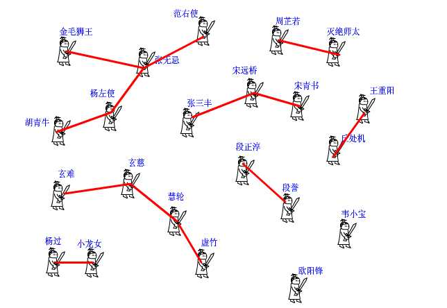
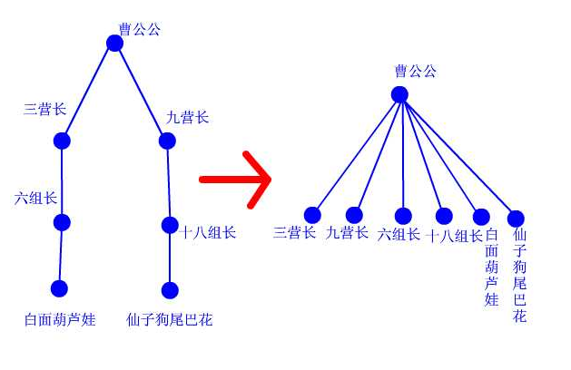

例子就是杭电上的畅通工程：
http://acm.hdu.edu.cn/showproblem.php?pid=1232
首先在地图上给你若干个城镇，这些城镇都可以看作点，然后告诉你哪些对城镇之间是有道路直接相连的。最后要解决的是整幅图的连通性问题。比如随意给你两个点，让你判断它们是否连通，或者问你整幅图一共有几个连通分支，也就是被分成了几个互相独立的块。像畅通工程这题，问还需要修几条路，实质就是求有几个连通分支。
如果是1个连通分支，说明整幅图上的点都连起来了，不用再修路了；如果是2个连通分支，则只要再修1条路，从两个分支中各选一个点，把它们连起来，那么所有的点都是连起来的了；如果是3个连通分支，则只要再修两条路……以下面这组数据输入数据来说明
4 2 1 3 4 3
第一行告诉你，一共有4个点，2条路。下面两行告诉你，1、3之间有条路，4、3之间有条路。那么整幅图就被分成了1-3-4和2两部分。只要再加一条路，把2和其他任意一个点连起来，畅通工程就实现了，那么这个这组数据的输出结果就是1。好了，现在编程实现这个功能吧，城镇有几百个，路有不知道多少条，而且可能有回路。 这可如何是好？
我以前也不会呀，自从用了并查集之后，嗨，效果还真好！我们全家都用它！
并查集由一个整数型的数组和两个函数构成。数组pre[]记录了每个点的前导点是什么，函数find是查找，join是合并。
为了解释并查集的原理，我将举一个更有爱的例子。
话说江湖上散落着各式各样的大侠，有上千个之多。他们没有什么正当职业，整天背着剑在外面走来走去，碰到和自己不是一路人的，就免不了要打一架。但大侠们有一个优点就是讲义气，绝对不打自己的朋友。而且他们信奉“朋友的朋友就是我的朋友”，只要是能通过朋友关系串联起来的，不管拐了多少个弯，都认为是自己人。这样一来，江湖上就形成了一个一个的帮派，通过两两之间的朋友关系串联起来。而不在同一个帮派的人，无论如何都无法通过朋友关系连起来，于是就可以放心往死了打。但是两个原本互不相识的人，如何判断是否属于一个朋友圈呢？
我们可以在每个朋友圈内推举出一个比较有名望的人，作为该圈子的代表人物。这样，每个圈子就可以这样命名“中国同胞队”美国同胞队”……两人只要互相对一下自己的队长是不是同一个人，就可以确定敌友关系了。但是还有问题啊，大侠们只知道自己直接的朋友是谁，很多人压根就不认识队长

下面我们来看并查集的实现。 int pre[1000]; 这个数组，记录了每个大侠的上级是谁。大侠们从1或者0开始编号（依据题意而定），pre[15]=3就表示15号大侠的上级是3号大侠。如果一个人的上级就是他自己，那说明他就是掌门人了，查找到此为止。也有孤家寡人自成一派的，比如欧阳锋，那么他的上级就是他自己。每个人都只认自己的上级。比如胡青牛同学只知道自己的上级是杨左使。张无忌是谁？不认识！要想知道自己的掌门是谁，只能一级级查上去。
find这个函数就是找掌门用的，意义再清楚不过了（路径压缩算法先不论，后面再说）。
再来看看join函数，就是在两个点之间连一条线，这样一来，原先它们所在的两个板块的所有点就都可以互通了。这在图上很好办，画条线就行了。但我们现在是用并查集来描述武林中的状况的，一共只有一个pre[]数组，该如何实现呢？ 还是举江湖的例子，假设现在武林中的形势如图所示。虚竹帅锅与周芷若MM是我非常喜欢的两个人物，他们的终极boss分别是玄慈方丈和灭绝师太，那明显就是两个阵营了。我不希望他们互相打架，就对他俩说：“你们两位拉拉勾，做好朋友吧。”他们看在我的面子上，同意了。这一同意可非同小可，整个少林和峨眉派的人就不能打架了。这么重大的变化，可如何实现呀，要改动多少地方？其实非常简单，我对玄慈方丈说：“大师，麻烦你把你的上级改为灭绝师太吧。这样一来，两派原先的所有人员的终极boss都是师太，那还打个球啊！反正我们关心的只是连通性，门派内部的结构不要紧的。”玄慈一听肯定火大了：“我靠，凭什么是我变成她手下呀，怎么不反过来？我抗议！”于是，两人相约一战，杀的是天昏地暗，风云为之变色啊，但是啊，这场战争终究会有胜负，胜者为王。弱者就被吞并了。反正谁加入谁效果是一样的，门派就由两个变成一个了。这段函数的意思明白了吧？
再来看看路径压缩算法。建立门派的过程是用join函数两个人两个人地连接起来的，谁当谁的手下完全随机。最后的树状结构会变成什么样，我也无法预知，一字长蛇阵也有可能。这样查找的效率就会比较低下。最理想的情况就是所有人的直接上级都是掌门，一共就两级结构，只要找一次就找到掌门了。哪怕不能完全做到，也最好尽量接近。这样就产生了路径压缩算法。
设想这样一个场景：两个互不相识的大侠碰面了，想知道能不能干一场。 于是赶紧打电话问自己的上级：“你是不是掌门？” 上级说：“我不是呀，我的上级是谁谁谁，你问问他看看。” 一路问下去，原来两人的最终boss都是东厂曹公公。 “哎呀呀，原来是自己人，有礼有礼，在下三营六组白面葫芦娃!” “幸会幸会，在下九营十八组仙子狗尾巴花！” 两人高高兴兴地手拉手喝酒去了。 “等等等等，两位大侠请留步，还有事情没完成呢！”我叫住他俩。 “哦，对了，还要做路径压缩。”两人醒悟。 白面葫芦娃打电话给他的上级六组长：“组长啊，我查过了，其实偶们的掌门是曹公公。不如偶们一起结拜在曹公公手下吧，省得级别太低，以后查找掌门麻烦。” “唔，有道理。” 白面葫芦娃接着打电话给刚才拜访过的三营长……仙子狗尾巴花也做了同样的事情。 这样，查询中所有涉及到的人物都聚集在曹公公的直接领导下。每次查询都做了优化处理，所以整个门派树的层数都会维持在比较低的水平上。路径压缩的代码，看得懂很好，看不懂可以自己模拟一下，很简单的一个递归而已。总之它所实现的功能就是这么个意思。

于是，问题圆满解决。。。。。。。。。
代码如下：